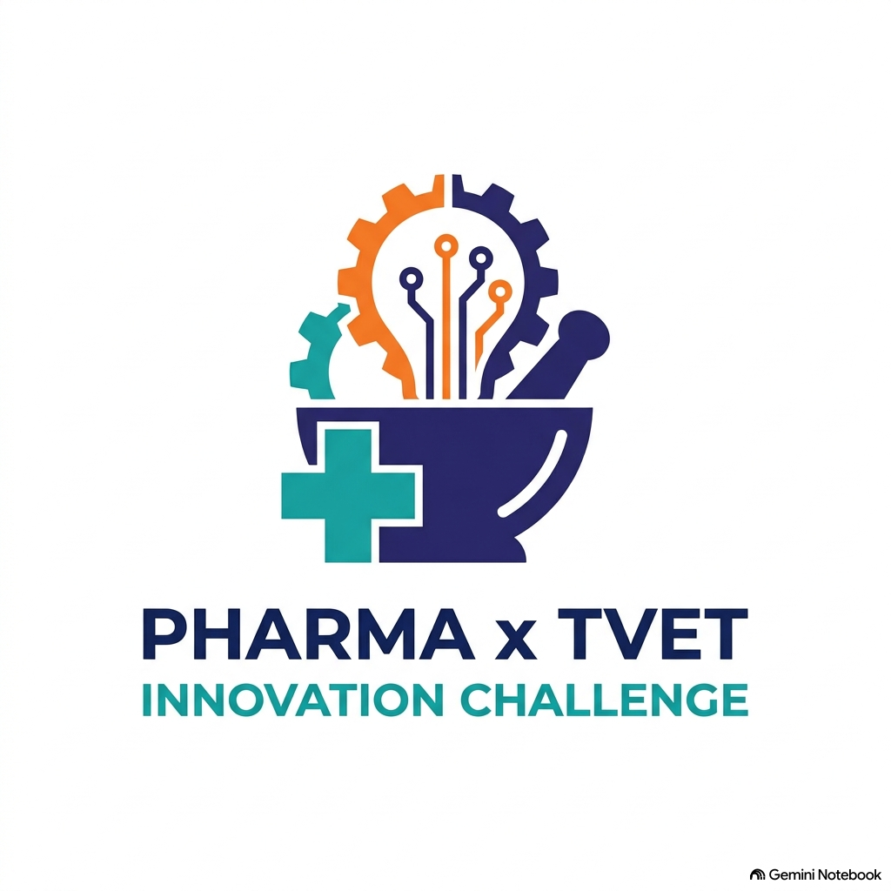

Kolej Vokasional Temerloh
#01
Emira Sham Syafira binti Shamsul Kamal
🏥 Hospital Jerantut

“Innovating Pharmacy Today for a Healthier Generation Tomorrow”
GENERASI CELIK UBAT MENANGANI ISU UBAT-UBATAN
01 / TENTANG PROGRAM
Inisiatif kolaborasi sehari antara BPF JKNP dan pelajar kolej vokasional bagi memacu inovasi dalam perkhidmatan farmasi. Menggabungkan kepakaran operasi kakitangan farmasi bersama kemahiran teknikal, digital, dan reka bentuk pelajar, program ini bertujuan menghasilkan prototaip penyelesaian praktikal yang berimpak tinggi, selamat, dan kos efektif.
02 / KUMPULAN SASARAN DAN FORMAT PENYERTAAN
Setiap kumpulan memilih satu masalah atau peluang penambahbaikan dalam perkhidmatan farmasi.
Idea hendaklah sesuai dengan skop perkhidmatan farmasi, realistik, selamat dan efisien.
Setiap kumpulan menyediakan penerangan ringkas tentang masalah, objektif inovasi, pengguna sasaran, kaedah penyelesaian, anggaran kos dan impak yang dijangkakan.
Peserta akan membentangkan lakaran, model, bahan pendidikan, mock-up digital atau prototaip pada hari pertandingan.
Masa pembentangan adalah selama 10 minit (7 minit pembentangan dan 3 minit soal jawab). Pembentangan adalah secara product pitching (tertakluk kepada perubahan). Kumpulan boleh merujuk kepada program JUNIOR INNOVATHON RTM ↗.
Format pemarkahan/penilaian juri akan dimaklumkan kemudian.
03 / PERANAN PEGAWAI FARMASI
Memberikan bimbingan dan khidmat nasihat berkaitan perkhidmatan farmasi bagi membantu kumpulan mengenal pasti masalah, keperluan pengguna dan peluang penambahbaikan yang sesuai untuk dijadikan idea inovasi.
Membimbing pembangunan idea inovasi supaya idea yang dicadangkan bersesuaian dengan objektif pertandingan, praktikal, berkos efektif dan berpotensi dilaksanakan dalam persekitaran perkhidmatan farmasi.
Memantau kemajuan projek secara berkala bagi memastikan setiap kumpulan melaksanakan aktiviti mengikut perancangan, jadual dan skop projek yang telah ditetapkan.
Memberikan panduan teknikal dan klinikal berdasarkan kepakaran serta pengalaman dalam bidang farmasi, termasuk memastikan inovasi yang dibangunkan mengambil kira aspek keselamatan, ketepatan maklumat dan keperluan pengguna.
Membantu mengenal pasti masalah dan kekangan yang dihadapi oleh kumpulan serta mencadangkan penyelesaian yang bersesuaian bagi memastikan projek dapat diteruskan dengan lancar.
Menyemak dan memberikan maklum balas terhadap reka bentuk, fungsi dan kebolehgunaan prototaip bagi memastikan inovasi yang dihasilkan memenuhi keperluan pengguna serta mencapai objektif yang ditetapkan.
Membimbing penyediaan dokumentasi dan pembentangan projek termasuk penerangan masalah, objektif, kaedah pelaksanaan, kelebihan inovasi, anggaran kos dan potensi penggunaannya dalam perkhidmatan farmasi.
Melaporkan perkembangan kumpulan kepada jawatankuasa penganjur serta memaklumkan sebarang isu atau keperluan sokongan yang boleh menjejaskan pelaksanaan projek.
04 / SENARAI MENTOR & PENCERAMAH
05 / CIRI-CIRI UTAMA PROJEK
06 / CONTOH PEMBENTANGAN
Rujukan gaya pembentangan product pitching daripada pertandingan inovasi yang serupa.
07 / ATUR CARA PROGRAM (TENTATIF)
08 / LOKASI & PANDUAN TAPAK
Jalan Maran, 28000 Temerloh, Pahang Darul Makmur.
Pendaftaran peserta (8.00 – 8.30 pagi), semakan kehadiran kumpulan, dan agihan sarapan pagi.
Sesi pembentangan product pitching 10 minit, panel juri, serta upacara perasmian penutup.
Ruang susun atur prototaip kumpulan dan lokasi sesi fotografi rasmi pada akhir majlis.
09 / SOALAN LAZIM & HUBUNGI KAMI